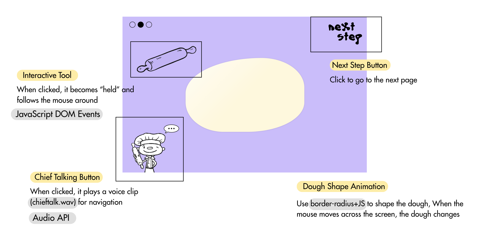

Judgments of PurposeMy desired outcome for the project |
The aim of the Bread Maker project was to create an engaging, interactive web experience that simulates a number of bread-making steps in stylized, interactive form. I wanted users to move through a mini adventure—arriving at the home page, adding ingredients, interacting with dough, and finally drawing on the toasted bread. The goal was to create something with the feel of a playful digital cooking toy, combining touch interactions, storytelling, and imagination.

|
Judgments of WorthWhat values, besides novelty, were important for the project? |
Apart from novelty, I valued user engagement, creativity, and accessibility. I aimed to make each page approachable for a general audience without prior instructions, encouraging exploration through intuitive design. I also wanted to provide space for self-expression, especially on the drawing page where users can decorate the oven. These values helped guide the interaction and visual design throughout. |
Judgments of FramingWhat were the limitations (conceptual and/or technical) you placed on the project's design space? |
Conceptually, I had thought of the project as a series of connected, small activities in terms of bread making. But one fundamental constraint was that these elements were not properly integrated. Each page—home, add ingredients, dough interaction, drawing—is isolated from the others, but they don't influence each other significantly. Technically, I chose lightweight tools like HTML, CSS, JavaScript, and some Matter.js to keep the project browser-friendly and manageable. With six pages to build (some with overlapping function), I had to carefully plan and divide my time. Pages like the ingredient selection and dough interaction were especially challenging, as I had no prior experience with interactive visuals or morphing shapes. These required extensive research, trial and error, and pushed my technical skills. While the limitations helped focus the project, they also restricted deeper interaction and stronger page-to-page connections. |
Judgments of AppearanceWhat were your choices and intentions in relation to the style/character/aesthetics of the project? |
My visual intentions included a soft, playful aesthetic using purple as a primary color and introducing characters like a dog and a chef to enhance storytelling. I wanted to create a friendly and whimsical atmosphere. However, some final implementations did not match my original visual proposal. For example, I planned for a round bowl in the ingredient page, but couldn't achieve the correct shape with CSS, which weakened the visual clarity of that step.
Example
|
Judgments of QualityWhat choices did you make about the technical implementation of the project? |
I chose to use lightweight, browser-friendly technologies like HTML, CSS, JavaScript, and some Matter.js to keep the project accessible and manageable. Each page focused on a different type of interaction — from button clicks to drag-and-drop to soft-body physics — so I had to carefully plan which tools to use based on the complexity of the feature.
1, Home PageOn the home page, I focused on sound interaction by using hover effects to play audio clips when users move their cursor over certain elements and also click to start background music. This created a fun and responsive atmosphere from the start.
2, Ingredients PageFor the ingredients page, I used the external Matter.js physics engine to simulate gravity and collisions. This allowed the ingredients to behave in a dynamic and natural way. I also added browser-based sound effects that play when ingredients are selected or moved, enhancing the sensory and interactive experience.3, Dough PageOn the dough page, I combined CSS animations with JavaScript instead of relying only on complex JavaScript. This made it easier to create smooth, soft movements and interactive shape changes that mimic dough being pushed or poked, while keeping the code cleaner and more manageable. 4, Drawing PageFor the drawing page, I used the Canvas API to allow users to freely draw on the oven image. I included features like undo and export so users could creatively decorate their bread and save the result.
|
Judgments of CompositionHow did you balance the project as a gestalt whole? |
I tried to balance the project as a gestalt whole by designing each page to feel like part of a larger, playful journey. My goal was to create a cohesive, step-by-step experience where each stage of the bread-making process flowed naturally into the next. While each page featured a distinct interactive element—like selecting ingredients or shaping dough—the lack of data continuity between stages meant they functioned more like standalone mini-games than parts of a unified system. I used consistent characters and visual styles to try to tie everything together, but without shared logic or consequences across pages, user actions didn’t influence future steps or the final outcome, which weakened the sense of overall coherence. |
Judgments of NavigationWhat did you choose to prioritise during your project's development? |
In the Bread Maker project, this is what I prioritized during development:
Playful InteractivityI prioritized user engagement through playful, touch-based interactions. The goal wasn't just to simulate baking — it was to make it feel fun and imaginative, like a digital toy.Simplicity and ClarityInstead of complex mechanics, I focused on simple interactions that anyone could understand. This made the project more accessible and helped keep the scope manageable.Visual Character and StoryI gave importance to storytelling and character — like the inclusion of a dog and a chef — to give emotional warmth and coherence to the experience, beyond technical features.
|